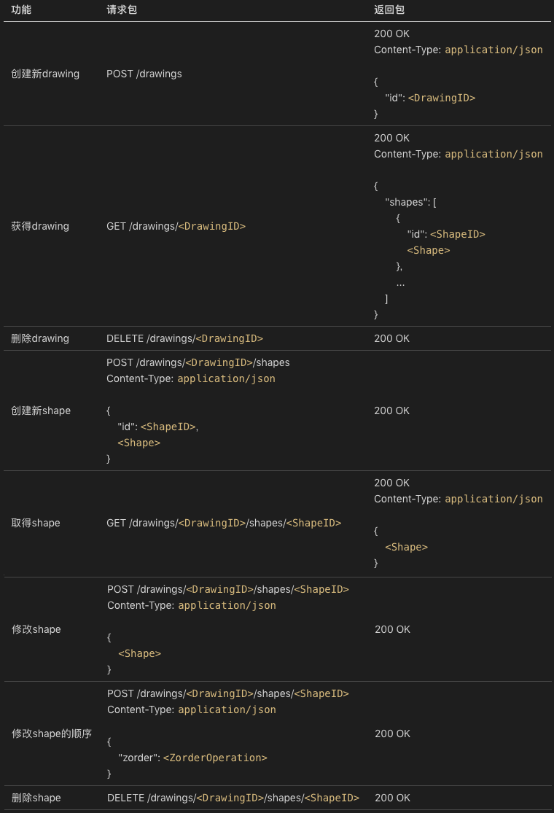

- 00 开篇词 怎样成长为优秀的软件架构师？.md
- 01 架构设计的宏观视角.md
- 02 大厦基石：无生有，有生万物.md
- 03 汇编：编程语言的诞生.md
- 04 编程语言的进化.md
- 05 思考题解读：如何实现可自我迭代的计算机？.md
- 06 操作系统进场.md
- 07 软件运行机制及内存管理.md
- 08 操作系统内核与编程接口.md
- 09 外存管理与文件系统.md
- 10 输入和输出设备：交互的演进.md
- 11 多任务：进程、线程与协程.md
- 12 进程内协同：同步、互斥与通讯.md
- 13 进程间的同步互斥、资源共享与通讯.md
- 14 IP 网络：连接世界的桥梁.md
- 15 可编程的互联网世界.md
- 16 安全管理：数字世界的守护.md
- 17 架构：需求分析 (上).md
- 18 架构：需求分析 (下) · 实战案例.md
- 19 基础平台篇：回顾与总结.md
- 20 桌面开发的宏观视角.md
- 21 图形界面程序的框架.md
- 22 桌面程序的架构建议.md
- 23 Web开发：浏览器、小程序与PWA.md
- 24 跨平台与 Web 开发的建议.md
- 25 桌面开发的未来.md
- 26 实战（一）：怎么设计一个“画图”程序？.md
- 27 实战（二）：怎么设计一个“画图”程序？.md
- 28 实战（三）：怎么设计一个“画图”程序？.md
- 29 实战（四）：怎么设计一个“画图”程序？.md
- 30 实战（五）：怎么设计一个“画图”程序？.md
- 31 辅助界面元素的架构设计.md
- 32 架构：系统的概要设计.md
- 33 桌面开发篇：回顾与总结.md
- 34 服务端开发的宏观视角.md
- 35 流量调度与负载均衡.md
- 36 业务状态与存储中间件.md
- 37 键值存储与数据库.md
- 38 文件系统与对象存储.md
- 39 存储与缓存.md
- 40 服务端的业务架构建议.md
- 41 实战（一）：“画图”程序后端实战.md
- 42 实战（二）：“画图”程序后端实战.md
- 43 实战（三）：“画图”程序后端实战.md
- 44 实战（四）：“画图”程序后端实战.md
- 45 架构：怎么做详细设计？.md
- 46 服务端开发篇：回顾与总结.md
- 47 服务治理的宏观视角.md
- 48 事务与工程：什么是工程师思维？.md
- 49 发布、升级与版本管理.md
- 50 日志、监控与报警.md
- 51 故障域与故障预案.md
- 52 故障排查与根因分析.md
- 53 过载保护与容量规划.md
- 54 业务的可支持性与持续运营.md
- 55 云计算、容器革命与服务端的未来.md
- 56 服务治理篇：回顾与总结.md
- 57 心性：架构师的修炼之道.md
- 58 如何判断架构设计的优劣？.md
- 59 少谈点框架，多谈点业务.md
- 60 架构分解：边界，不断重新审视边界.md
- 61 全局性功能的架构设计.md
- 62 重新认识开闭原则 (OCP).md
- 63 接口设计的准则.md
- 64 不断完善的架构范式.md
- 65 架构范式：文本处理.md
- 66 架构老化与重构.md
- 67 架构思维篇：回顾与总结.md
- 68 软件工程的宏观视角.md
- 69 团队的共识管理.md
- 70 怎么写设计文档？.md
- 71 如何阅读别人的代码？.md
- 72 发布单元与版本管理.md
- 73 软件质量管理：单元测试、持续构建与发布.md
- 74 开源、云服务与外包管理.md
- 75 软件版本迭代的规划.md
- 76 软件工程的未来.md
- 77 软件工程篇：回顾与总结.md
- 加餐 如何做HTTP服务的测试？.md
- 加餐 实战：“画图程序” 的整体架构.md
- 加餐 怎么保障发布的效率与质量？.md
- 热点观察 我看Facebook发币（上）：区块链、比特币与Libra币.md
- 热点观察 我看Facebook发币（下）：深入浅出理解 Libra 币.md
- 用户故事 站在更高的视角看架构.md
- 答疑解惑 想当架构师，我需要成为“全才”吗？.md
- 结束语 放下技术人的身段，用极限思维提升架构能力.md
- 课外阅读 从《孙子兵法》看底层的自然法则.md
32 架构：系统的概要设计
你好，我是七牛云许式伟。
我们第二章 “桌面开发篇” 就快要结束了。今天我们把话题重新回到架构上。
基础架构与业务架构
桌面开发篇我们主要涉及的内容如下。

对于一位架构师而言，其架构工作的内容可以大体分为两块，一块是基础架构，一块是业务架构。
基础架构，简单来说就是做技术选型。选择要支持的操作系统、选择编程语言、选择技术框架、选择第三方库，这些都可以归结为基础架构方面的工作。
基础架构的能力，考验的是选择能力。背后靠的是技术前瞻性和判断力。这并不简单。大部分架构师往往更容易把关注点放到业务架构上，但实际上基础架构的影响面更广，选错产生的代价更高。
架构师之间的差距，更大的是体现在其对待基础架构的态度和能力构建上。真正牛的架构师，一定会无比重视团队的技术选型，无比重视基础平台的建设。阿里提倡的 “大中台、小前台”，本质上也是在提倡基础平台建设，以此不断降低业务开发的成本，提升企业的创新能力。
业务架构，简单来说就是业务系统的分解能力。基础架构其实也是对业务系统的分解，只不过分解出了与业务属性几乎无关的部分，形成领域无关的基础设施。而业务架构更多的是分解领域问题 。
一旦我们谈业务架构，就避不开领域问题的理解。所谓领域问题，谈的是这个领域的用户群面临的普遍需求。所以我们需要对用户的需求进行分析。
在第一章，我们已经聊了需求分析：
- [17 | 架构：需求分析（上）]
- [18 | 架构：需求分析（下）- 实战案例]
这是我们开始业务架构的第一步。没有需求分析，就没有业务架构。在业务架构过程中，需求分析至少应该花费三分之一以上的精力。
今天，我们聊一聊架构的第二步：系统的概要设计，简称系统设计。
系统设计，简单来说就是 “对系统进行分解” 的能力。这个阶段核心要干的事情，就是明确子系统的职责边界和接口协议，把整个系统的大框架搭起来。
那么怎么分解系统？
首先我们需要明确的是分解系统优劣的评判标准。也就是说，我们需要知道什么样的系统分解方式是好的，什么样的分解方式是糟糕的。
最朴素的评判依据，是这样两个核心的点：
- 功能的使用界面（或者叫接口），应尽可能符合业务需求对它的自然预期；
- 功能的实现要高内聚，功能与功能之间的耦合尽可能低。
在软件系统中有多个层次的组织单元：子系统、模块、类、方法/函数。子系统如何分解模块？模块如何分解到更具体的类或函数？每一层的分解方式，都遵循相同的套路。也就是分解系统的方法论。
接口要自然体现业务需求
我们先看功能的使用界面（或者叫接口）。
什么是使用界面？
对于函数，它的使用界面就是函数原型。
package packageName
func FuncName(
arg1 ArgType1, ..., argN ArgTypeN
) (ret1 RetType1, ..., retM RetTypeM)
它包含三部分信息。
- 函数名。严谨来说是包含该函数所在的名字空间的函数名全称，比如上例是 packageName.FuncName。
- 输入参数列表。每个参数包含参数名和参数类型。
- 输出结果列表。每个输出结果包含结果名和结果类型。当然，很多语言的函数是单返回值的，也就是输出结果只有一个。这种情况下输出结果没有名称，只有一个结果类型，也叫返回值类型。
对于类，它的使用界面是类的公开属性和方法。
package packageName
type ClassName struct {
Prop1 PropType1
...
PropK PropTypeK
}
func (receiver *ClassName) MethodName1(
arg11 ArgType11, ..., arg1N1 ArgType1N1
) (ret11 RetType11, ..., ret1M1 RetType1M1)
...
func (receiver *ClassName) MethodNameL(
argL1 ArgTypeL1, ..., argLNL ArgTypeLNL
) (retL1 RetTypeL1, ..., retLML RetTypeLML)
它包含以下内容。
- 类型名。严谨来说是包含该类型所在的名字空间的类型名全称，比如上例是 packageName.ClassName。
- 公开属性列表。每个属性包含属性名和属性类型。Go 语言对属性的支持比较有限，直接基于类型的成员变量来表达。而一些语言，比如 JavaScript，对属性的支持比较高级，允许给某个属性设定 get/set 方法。这样就能够做到只读、只写、可读写三种属性。
- 公开方法列表。
方法和函数本质上是一样的，有的只是细节不同。这表现在下面几点。
名字空间不同。普通函数的函数名全称是 packageName.FuncName，而方法的方法名全称是 packageName.(*ClassName).MethodName 这种形式。
方法相比函数多了一个概念叫 receiver（接受者），也就是方法所作用的对象。在 Go 语言中 receiver 是显式表达的。但大部分语言中 receiver 是隐藏的，通常名字叫 this 或 self。
对于模块，它的使用界面比较多样，需要看模块类型。典型的模块类型有这样一些：
- 包（package）。一些语言中也叫静态库（static library）。
- 动态库（dynamic library）。在 Go 语言中有个特殊的名称叫插件（plugin）。
- 可执行程序（application）。
对于包（package）和动态库（dynamic library），这两者都是代码的一种发布形态，只是标准的制定方不同。包（package）一般是由编程语言定义的，对开发者比较友好。而动态库（dynamic library）一般是操作系统定义的，可以做到跨语言，但是对开发者往往不太友好。为什么不友好？因为它要定义跨语言的符号定义和类型定义的标准。这意味着它只能取多个编程语言之间的共性部分。
对于可执行程序（application），又要分多种情况。最常见的可执行程序有这么几类：
- 网络服务程序（service）；
- 命令行程序（command line application）；
- 桌面程序（GUI application）
对于网络服务程序（service），它的使用界面是网络协议。前面我们在 [“画图” 程序实战（四）]这一讲中也有定义过画图服务端的网络协议。如下：

对于命令行程序（command line application），它的使用界面包括：
- 命令行，包括：命令名称、开关列表、参数列表。例如：CommandName -Switch1 … -SwitchN Arg1 … ArgM。
- 标准输入（stdin）。
- 标准输出（stdout）。
对于桌面程序（GUI application），它的使用界面就是用户的操作方式。桌面程序的界面外观当然是重要的，但不是最重要的。最重要的是交互范式，即用户如何完成功能的业务流程的定义。为什么我们需要专门引入产品经理这样的角色来定义产品，正是因为使用界面的重要性。
以上这些组织单元都物理上存在，最后我们还剩一个概念：子系统。在实际开发中，并不存在物理的实体与子系统这个概念对应，它只存在于架构设计的文档中。
那么怎么理解子系统？
子系统是一个逻辑的概念，物理上可能对应一个模块（Module），也可能是多个模块。你可以把子系统理解为一个逻辑上的大模块（Big Module），这个大模块我们同样会去定义它的使用接口。
子系统与模块的对应方式有两种常见的情况。
一种情况，也是最常见的情况，子系统由一个根模块（总控模块）和若干子模块构成。子系统的使用接口，就是根模块的使用接口。
另一种情况，是子系统由多个相似的模块构成。例如对于 Office 程序来说，IO 子系统由很多相似模块构成，例如 Word 文档读写、HTML 文档读写、TXT 文档读写、PDF 文档读写等等，这些模块往往有统一的使用界面。
通过上面对子系统、模块、类、函数的使用界面的解释，你会发现其实它们是有共性的。它们都是在定义完成业务需求的方法，只不过需求满足方式的层次不一样。类和函数是从语言级的函数调用来完成业务，网络服务程序是通过网络 RPC 请求来完成业务，桌面程序是通过用户交互来完成业务。
理解了这一点，你就很容易明白，“功能的使用界面应尽可能符合业务需求对它的自然预期” 这句话背后的含义。
一个程序员的系统分解能力强不强，其实一眼就可以看出来。你都不需要看实现细节，只需要看他定义的模块、类和函数的使用接口。如果存在大量说不清业务意图的函数，或者存在大量职责不清的模块和类，就知道他基本上还处在搬砖阶段。
无论是子系统、模块、类还是函数，都有自己的业务边界。它的职责是否足够单一足够清晰，使用接口是否足够简单明了，是否自然体现业务需求（甚至无需配备额外的说明文档），这些都体现了架构功力。
功能实现准则：高内聚低耦合
系统分解的套路中，除了功能自身的使用界面之外，我们还关注功能与功能之间是如何被连接起来的。当然这就涉及了功能的实现。
功能实现的基本准则是：功能自身代码要高内聚，功能与功能之间要低耦合。
什么叫高内聚？简单来说，就是一个功能的代码应该尽可能写在一起，而不是散落在各处。我个人在高内聚这个方向上养成的习惯是：
- 一个功能的代码尽可能单独一个文件，不要和其他功能混在一起；
- 一些小功能的代码可能放在一起放在同一个文件中，但是中间也会用“// —————— ”这样的注释行分割成很多逻辑上的 “小文件”，代表这是一段独立的小功能。
代码高内聚的好处是，多大的团队协作都会很顺畅，代码提交基本上不怎么发生冲突。
那么什么叫低耦合？简单来说就是实现某个功能所依赖的外部环境少，易于构建。
功能实现的外部依赖分两种。一种是对业务无关的基础组件依赖，一种是对底层业务模块的依赖。
基础组件可能是开源项目，当然也可能来自公司的基础平台部。关于基础组件的依赖，我们核心的关注点是稳定。稳定体现在如下两个方面。
一方面是组件的成熟度。这个组件已经诞生多久了，使用接口是不是已经不怎么会调整了，功能缺陷（issue）是不是已经比较少了。
另一方面是组件的持久性。组件的维护者是谁，是不是有足够良好的社区信用（credit），这个项目是不是还很活跃，有多少人在参与其中，为其贡献代码。
当然从架构角度，我们关注的重点不是基础组件的依赖，而是对其他业务模块的依赖。它更符合业务系统分解的本来含义。
对底层业务模块的依赖少、耦合低的表现为：
- 对底层业务的依赖是 “通用” 的，尽量不要出现让底层业务模块专门为我定制接口；
- 依赖的业务接口的个数少，调用频次低。
怎么做系统分解？
有了系统分解的优劣评判标准，那么我们具体怎么去做呢？
总体来说，系统分解是一个领域性的问题，它依赖你对用户需求的理解，并不存在放之四海皆可用的办法。
系统分解首先要从需求归纳出发。用户需求分析清楚很重要。把需求功能点涉及的数据（对象）、操作接口理清楚，并归纳整理，把每个功能都归于某一类。然后把类与类的关系理清楚，做到逻辑上自洽，那么一个基本的系统框架就形成了。
在系统的概要设计阶段，我们一般以子系统为维度来阐述系统各个角色之间的关系。
对于关键的子系统，我们还会进一步分解它，甚至详细到把该子系统的所有模块的职责和接口都确定下来。但这个阶段我们的核心意图并不是确定系统完整的模块列表，我们的焦点是整个系统如何被有效地串联起来。如果某个子系统不作进一步的分解也不会在项目上有什么风险，那么我们并不需要在这个阶段对其细化。
为了降低风险，系统的概要设计阶段也应该有代码产出。
这个阶段的代码用意是什么？
有两个方面的目的。** 其一，系统的初始框架代码。也就是说，系统的大体架子已经搭建起来了。其二，原型性的代码来验证。一些核心子系统在这个阶段提供了 mock 的系统。**
这样做的好处是，一上来我们就关注了全局系统性风险的消除，并且给了每个子系统或模块的负责人一个更具象且确定性的认知。
代码即文档。代码是理解一致性更强的文档。
再谈 MVC
本章我们主要探讨的是桌面程序开发。虽然不同桌面应用的业务千差万别，但是桌面本身是一个很确定性的领域，因此会形成自己固有的系统分解的套路。
大家已经知道了，桌面程序系统分解的套路就是 MVC 架构。
虽然不同历史时期的桌面程序的交互方式不太一样，有基于键盘+鼠标的、有基于触摸屏的，但是它们的框架结构是非常一致的，都是基于事件分派做输入，GDI 做界面呈现。

那么为什么会形成 Model-View-Controller（简称 MVC）架构？
我们第一章探讨需求分析时，我们反复强调一点：要分清需求的稳定点和变化点。稳定点是系统的核心能力，而变化点则需要做好开放性设计。
从这个角度来看，我们可以认为，业务的核心逻辑是稳定的，除非出现了新的技术革命导致产品的内在逻辑发生了质的变化。所以我们最底层一般以类和函数的形态来组织业务的核心逻辑，这就是 Model 层。
但用户交互是一个变化点。大家都是一个 “画图” 程序，无论是在 PC 桌面和手机上，Model 层是一样的，但是用户交互方式并不一样，View、Controllers 就有不小的差别。
当然 Model 层也有自己的变化点。它的变化点在于存储和网络。Model 层要考虑持久化，就会和存储打交道，就有自己的 IO 子系统。Model 层要考虑互联网化，就要考虑 B/S 架构，考虑网络协议。
不过无论是存储还是网络，从架构视角来说变化都是可预期的。存储介质会变，网络技术会变，但是变的只是实现，它们的使用接口并没变化。这意味着 Model 层不只是核心逻辑稳定，IO 和网络子系统也都很稳定。当然这也是把它们归于 Model 层的原因。如果它们是易变的，可能就被从 Model 层独立出去了。
用户交互这个变化点，主要体现在两个方面。一方面是屏幕尺寸导致的变化。更小的屏幕意味着界面上的信息需要被更高效地组织起来。另一方面则是交互的变化，鼠标交互和触摸屏的多点触摸交互是完全不同的。
View 层主要承担了界面呈现的工作。当然这也意味着它也承担了屏幕尺寸这个变化点。
Controller 层主要承担的是交互。具体来说就是响应用户的输入事件，把用户的操作转化为对 Model 层的业务请求。
Controller 层有很多 Controller。这些 Controller 通常各自负责不同的业务功能点。
也就是说，Model 层是一个整体，负责的是业务的核心逻辑。View 层也是一个整体，但在不同的屏幕尺寸和平台可能有不同的实现，但数量不会太多。而且现在流行所谓的响应式布局，也是鼓励尽可能在不同屏幕尺寸不同平台下共享同一个 View 的实现。Controller 层并不是一个整体，它是以插件化的形式存在，不同 Controlller 非常独立。
这样做的好处是可以快速适应交互的变化。比如以创建矩形这样一个功能为例，在 PC 鼠标+键盘的交互方式下有一个 RectCreator Controller，在触摸屏的交互方式可以是一个全新的 RectCreator Controller。在不同平台下，我们可以初始化不同的 Controller 实例来适应该平台的交互方式。
当然前面在 “[22 | 桌面程序的架构建议]” 一讲中，我们也介绍过 MVC 结构的一些变种，比如 MVP（Model-View-Presenter），主要是 Model 的数据更新发出 DataChanged 事件后，由 Controller 负责监听并 Update View，而不是由 View 层响应 DataChanged 事件并 Update View。
这些不同模型的差异其实只是细节的权衡、取舍，并不改变实质。
怎么看待实战？
第一章 “基础平台篇”，从架构的角度，我们主要是在学习基础架构。我们总体是从学历史的角度在聊，大家也是以听故事的方式为主。
但是第二章开始，我们话题逐步过渡到业务架构，同时也开始引入实战案例：“画图” 程序。
为什么实战是很重要的？
学架构，我个人强调的理念是 “做中学”。
首先还是要勤动手。然后配合本专栏去思考和梳理背后的道理，如此方能快速进步。
我们不能把架构课学成理论课。计算机科学本身是一门实践科学，架构经验更是一线实战经验的积累和总结。
为了方便大家进一步看清楚架构演变过程，我给画图程序实现了一个所有代码都揉在一起的非 MVC 版本（分支 v01）：
它的功能对应我们 “[26 | 实战(一)：怎么设计一个“画图”程序？]” 这一讲中的最小化的画图程序。这是当时给出的源代码（分支 v26）：
可以看到，v01 版本所有代码，包括 HTML+JavaScript，总共也就 470 行左右。所以这是一个非常小的架构实战案例。如果我们进一步减少案例的代码规模的话，可能就不太需要架构思想了。
我们不妨对比一下两个版本的差异。
一个最基础的对比是代码规模。v26 版本我们分拆了多个文件：
Model：dom.js（100 行）
View：view.js（112 行）
Controllers：
- accel/menu.js（86 行）
- creator/path.js（90 行）
- creator/freepath.js（71 行）
- creator/rect.js（108 行）
总控：index.htm（18 行）
这些文件加起来的代码量大概在 580 行，比 v01 版本多了 110 行。
这说明 MVC 架构的价值并不是给我们降低总代码行数。实际上，它关注的重点是如何让我们团队协同作战，让工作并行。
怎么让工作并行？这就要求我们实现功能的时候，做到功能自身代码要高内聚，功能间的依赖要低耦合。v26 版本我们把功能分拆为 6 个文件（除了总控 index.htm 不算），可以交给 6 个团队成员来做，平均每个人写 100 行左右的代码。
当然，对于总体代码量 500 行不到的一个程序来说，这多多少少显得有点小题大做。但我们在此之后演进迭代了多个版本，功能越来越复杂，分工的必要性也就越来越大。
除了代码规模外，对比 v01 和 v26 版本，我们不妨从这样一些点来看。
- 功能的高内聚。某个功能代码被分散在多少地方。
- 功能间的低耦合。当然 v01 版本所有代码都揉在了一起，我们不妨从如何做系统分解的视角来推演 v26 版本用 MVC 架构的意义。
- 怎么减少全局变量，为控件化做好准备。
结语
在我们介绍完第二章 “桌面开发” 篇的所有内容后，今天我们介绍了架构的第二步：系统的概要设计。
在概要设计阶段，我们一般以子系统为维度来阐述系统各个角色之间的关系。对于关键的子系统，我们还会进一步分解它，甚至详细到把该子系统的所有模块的职责和接口都确定下来。
这个阶段我们的核心意图并不是确定系统完整的模块列表，我们的焦点是整个系统如何被有效地串联起来。如果某个子系统不作进一步的分解也不会在项目上有什么风险，那么我们并不需要在这个阶段对其细化。
为了降低风险，概要设计阶段也应该有代码产出。
这样做的好处是，一上来我们就关注了全局系统性风险的消除，并且给了每个子系统或模块的负责人一个更具象且确定性的认知。
代码即文档。代码是理解一致性更强的文档。
如果你对今天的内容有什么思考与解读，欢迎给我留言，我们一起讨论。下一讲我们会回顾和总结第二章的内容。
如果你觉得有所收获，也欢迎把文章分享给你的朋友。感谢你的收听，我们下期再见。
© 2019 - 2023 Liangliang Lee. Powered by gin and hexo-theme-book.